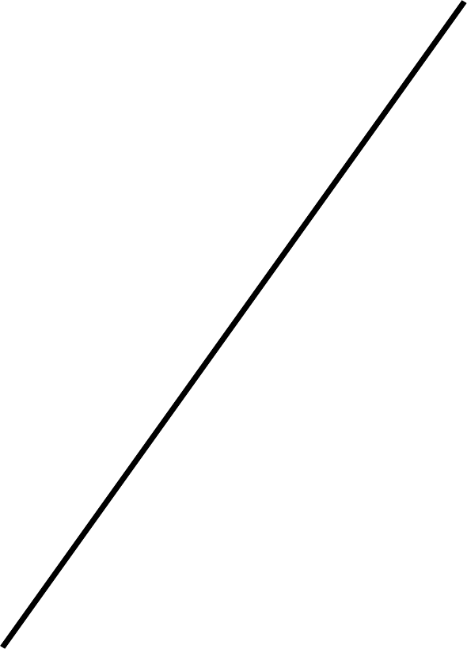
Tadao style
Strongly influenced by the religions and aesthetics of Japan, Ando's work is defined by its elegant simple forms that combine into rational and complex structures. In fact, his style has been said to share the artistic philosophy of another Japanese art form: haiku. In haiku, deep spiritual, philosophical, and personal meanings can be discovered through the simplest of forms. Ando achieves this through the use of smooth, flat concrete and glass. The materials are unadorned and undecorated, representing the simplest and most honest version of a structure.
Ando's architectural style is said to create a "haiku" effect, emphasizing nothingness and empty space to represent the beauty of simplicity. He favors designing complex spatial circulation while maintaining the appearance of simplicity. As an architect, he believes that architecture can change society, that "to change the dwelling is to change the city and to reform society" Werner Blaser has said, "Good buildings by Tadao Ando create memorable identity and therefore publicity, which in turn attracts the public and promotes market penetration".
The simplicity of his architecture emphasizes the concept of sensation and physical experiences, mainly influenced by Japanese culture. The religious term Zen, focuses on the concept of simplicity and concentrates on inner feeling rather than outward appearance. Zen influences vividly show in Ando’s work and became its distinguishing mark. In order to practice the idea of simplicity, Ando's architecture is mostly constructed with concrete, providing a sense of cleanliness and weightlessness (even though concrete is a heavy material) at the same time. Due to the simplicity of the exterior, construction, and organization of the space are relatively potential in order to represent the aesthetic of sensation.
Besides Japanese religious architecture, Ando has also designed Christian churches, such as the Church of the Light and the Church in Tarumi. Although Japanese and Christian churches display distinct characteristics, Ando treats them in a similar way. He believes there should be no difference in designing religious architecture and houses. As he explains,
“We do not need to differentiate one from the other. Dwelling in a house is not only a functional issue, but also a spiritual one. The house is the locus of heart, and the heart is the locus of god. Dwelling in a house is a search for the heart as the locus of god, just as one goes to church to search for god. An important role of the church is to enhance this sense of the spiritual. In a spiritual place, people find peace in their heart, as in their homeland.”
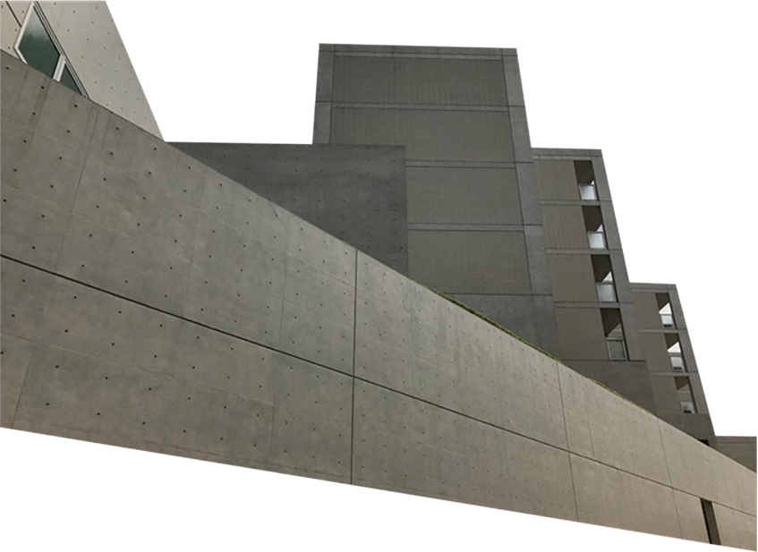
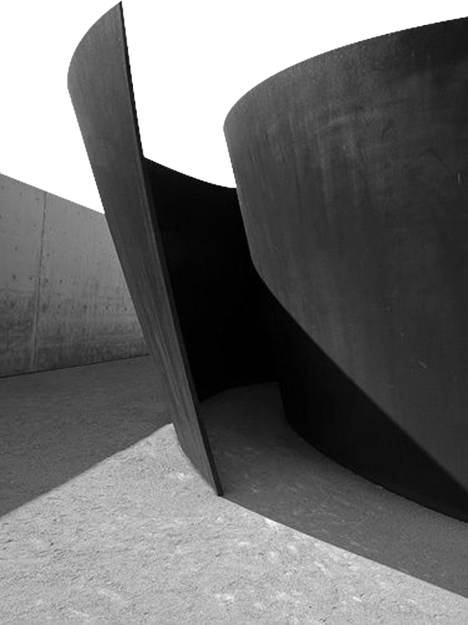
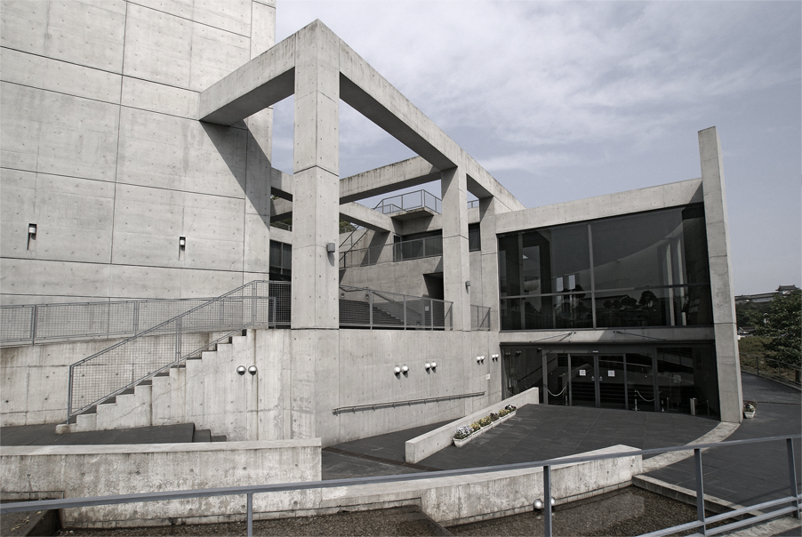
Hyogo prefectural museum of art
Himeji City Museum of Literature
Besides speaking of the spirit of architecture, Ando also emphasises the association between nature and architecture. He intends for people to easily experience the spirit and beauty of nature through architecture. He believes architecture is responsible for performing the attitude of the site and makes it visible. This not only represents his theory of the role of architecture in society but also shows why he spends so much time studying architecture from physical experience.Tadao Ando's body of work is known for the creative use of natural light and for structures that follow natural forms of the landscape, rather than disturbing the landscape by making it conform to the constructed space of a building. Ando's buildings are often characterized by complex three-dimensional circulation paths. These paths weave in between interior and exterior spaces formed both inside large-scale geometric shapes and in the spaces between them.
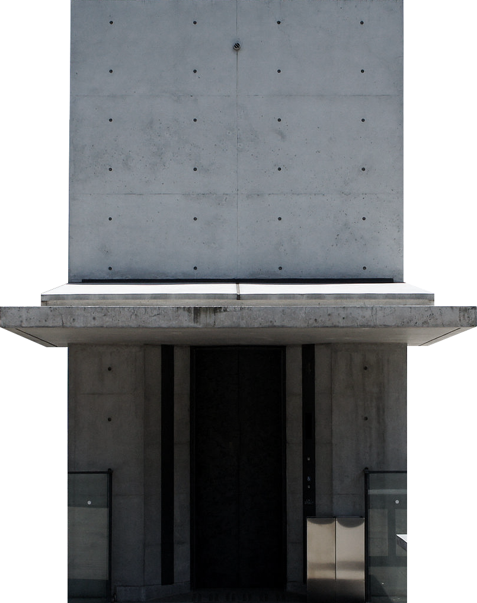
Hyogo prefectural museum of art
 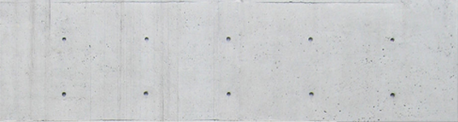
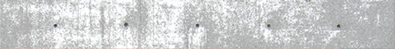
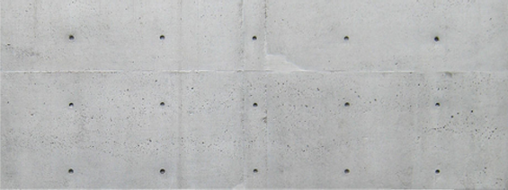
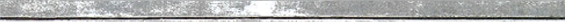
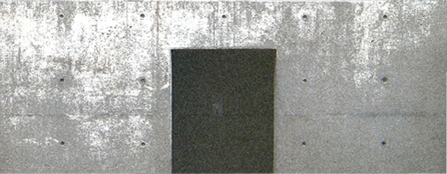
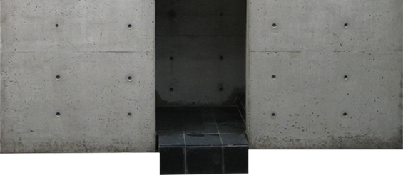
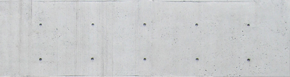
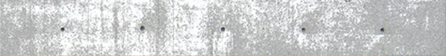
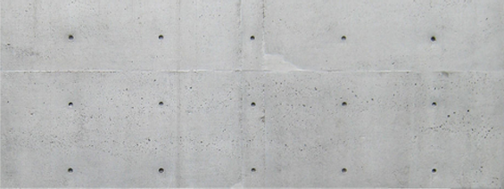
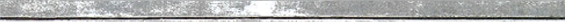
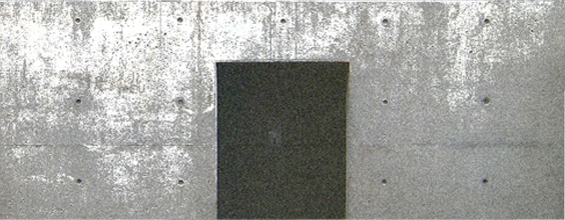
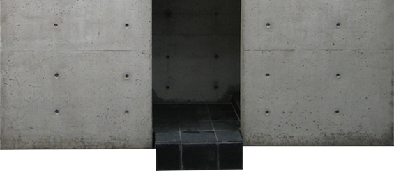
 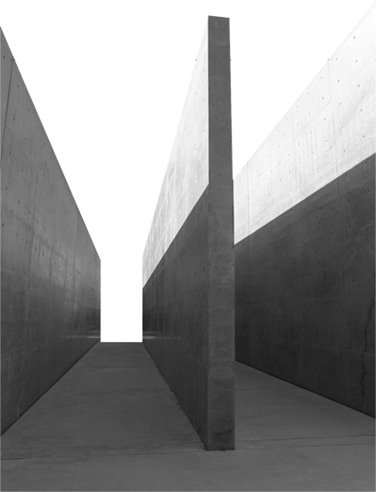
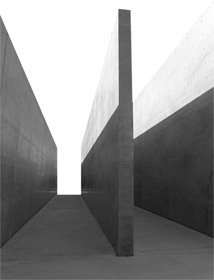